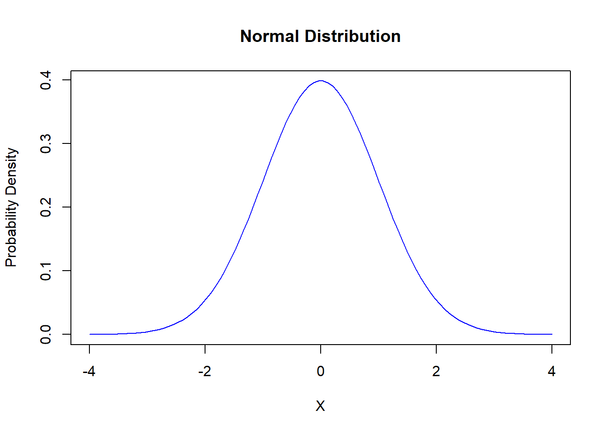
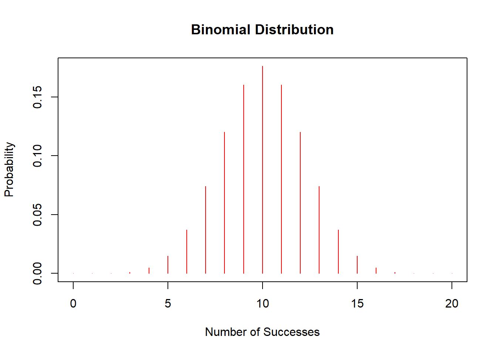

Chapter 7 Robust Estimation: Dealing with Outliers and Heavy Tails
In the real world, data isn’t always nice and tidy. Often, it’s messy, with outliers or heavy-tailed distributions that can skew your analysis. This is where robust estimation comes to the rescue, allowing us to create more reliable models even when data doesn’t play by the rules.
7.1 Why Robust Estimation?
Traditional methods like Ordinary Least Squares (OLS) assume that all observations are created equal. But what happens when some of those observations are way off-mark—like that one house price that’s ten times the average? OLS can get disproportionately thrown off by these outliers. Robust estimation methods, particularly M estimators, adjust the influence of different observations based on their conformity to the majority of the data, making them less sensitive to anomalies.
7.2 Commonly Used Weight Functions:
- Huber Weight Function:
- \(\psi(t) = \begin{cases} t & \text{if } |t| \leq k \\ k \cdot \text{sign}(t) & \text{otherwise} \end{cases}\)
- The Huber weight function is piecewise linear, giving full weight to small residuals and decreasing the influence of large residuals.
- Tukey Biweight Function:
- \(\psi(t) = \begin{cases} t \cdot (1 - \left(\frac{t}{k}\right)^2)^2 & \text{if } |t| \leq k \\ 0 & \text{otherwise} \end{cases}\)
- The Tukey function is a smooth, bounded function that completely eliminates the influence of very large residuals.
7.3 MM Estimators: Enhancing Robustness
MM estimators build on the concept of M estimators by ensuring high breakdown point (the proportion of incorrect observations a method can handle before giving incorrect results) and efficiency at the Gaussian model. They are particularly useful when you expect a small proportion of your data to be outliers but want to retain high efficiency for the majority of the data.
7.3.1 Simulation and Analysis in R
Let’s simulate some data, introduce outliers, and see how OLS and MM estimators handle it:
library(MASS) # for robust estimation functions
set.seed(42)
# Generate data
x <- rnorm(100)
y <- 2 * x + rnorm(100)
# Introduce outliers
y[1:10] <- y[1:10] + 10
# Fit OLS model
ols_model <- lm(y ~ x)
# Fit MM estimator
mm_model <- rlm(y ~ x, method = "MM")
# Plot the data and fits
plot(x, y, main = "Comparison of OLS and MM Estimator Fits")
abline(ols_model, col = "red", lwd = 2)
abline(mm_model, col = "blue", lwd = 2)
legend("topright", legend = c("OLS", "MM"), col = c("red", "blue"), lty = 1, lwd = 2)
7.4 How Robust is Robust?
In this example, we’ll explore the resilience of robust estimation methods by deliberately tainting a significant portion of our dataset. We’ll introduce outliers to 35% of the data to see how well the Ordinary Least Squares (OLS) and MM estimators can handle such extreme deviations.
7.4.1 Simulation Setup
We start by generating a simple linear dataset with x as the predictor and y as the response. To test the robustness of our estimators, we’ll add a substantial upward shift to 35% of the response values, simulating a scenario where a large chunk of our data might be compromised or erroneous.
library(MASS) # for robust estimation functions
set.seed(42)
# Generate data
x <- rnorm(100)
y <- 2 * x + rnorm(100)
# Introduce significant outliers to 35% of the data
y[1:35] <- y[1:35] + 50 # More pronounced effect to highlight the robustness
# Fit OLS model
ols_model <- lm(y ~ x)
# Fit MM estimator
mm_model <- rlm(y ~ x, method = "MM")
# Plot the data and fits
plot(x, y, main = "Robustness Check: OLS vs. MM Estimators",
xlab = "Predictor (x)", ylab = "Response (y)", pch = 19,
col = ifelse(1:100 %in% 1:35, "red", "black")) # Red for outliers, black for untainted data
abline(ols_model, col = "darkgreen", lwd = 3)
abline(mm_model, col = "blue", lwd = 3)
legend("topright", legend = c("OLS", "MM"), col = c("darkgreen", "blue"), lty = 1, lwd = 3)
7.4.2 Observations from the Plot
In the resulting plot, you’ll notice:
The red line (OLS model) is significantly influenced by the tainted data, veering towards the outliers. This shift demonstrates how traditional regression methods can be swayed by substantial deviations in the dataset.
The blue line (MM estimator), in stark contrast, remains steadfastly aligned with the untainted data, running right down the middle of the original data distribution. This robustness showcases the MM estimator’s ability to resist the influence of a large proportion of tainted data.
7.4.3 Conclusion
This example strikingly illustrates that even with 35% of the data compromised, the MM estimator provides a reliable insight into the true underlying patterns in the data, proving its mettle as a robust statistical tool. The OLS model, while still providing useful insights under normal conditions, fails to maintain its reliability in the face of such significant data contamination.